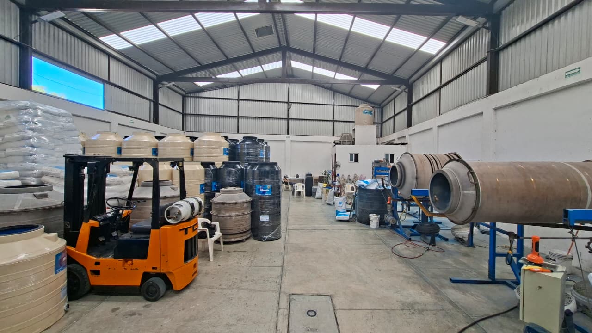
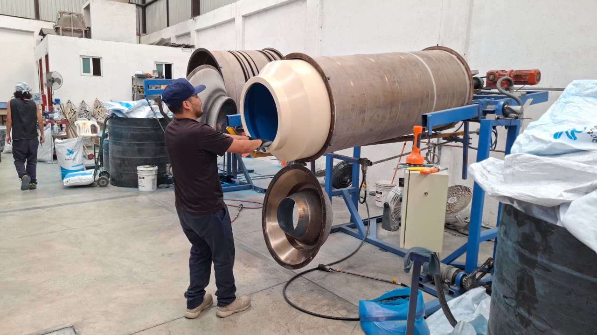

No somos distribuidores. Somos fabricantes. Desde 2018 operamos nuestra propia planta en Cuautitlán Izcalli, controlando cada etapa del proceso para entregar un producto sin compromisos.

Nuestra historia
En 2018, cuando el mercado de tinacos en México estaba dominado por productos fabricados con material reciclado y garantías de papel, ROTOMUNDO tomó la decisión opuesta: planta propia, polietileno 100% virgen y garantía real de hasta 15 años. No fue una apuesta fácil, pero era la correcta.
Planta propia en Cuautitlán Izcalli — no somos intermediarios. Controlamos diseño, fabricación, calidad y entrega desde el origen hasta tu hogar.
Tecnología de rotomoldeo de precisión — nuestros hornos biaxiales garantizan grosor uniforme en cada pieza, sin costuras, sin puntos débiles.
Cero reciclado, siempre virgen — cada gramo de polietileno que entra a nuestros moldes es materia prima virgen de alta densidad. Sin excepciones.
Garantía que se cumple — hasta 15 años contra defecto de fabricación, respaldada con documentación oficial y soporte directo del fabricante.
Entrega a domicilio en toda la ZMVM — flota propia de distribución para hogares, comercios y proyectos industriales en todo el Estado de México y CDMX.
Evolución
Se establece la planta en Cuautitlán Izcalli. Primera línea de producción de tinacos bicapa con polietileno virgen. El mercado lo ignoró. Los clientes no.
Ante la demanda del sector comercial e industrial, se incorpora la línea de cisternas de alta capacidad. Primer modelo de 5,000 litros para uso industrial.
Se introduce la tecnología tricapa con capa antibacterial integrada y protección UV reforzada. Garantía ampliada a 15 años. El estándar más alto del mercado.
Ampliación de la nave industrial. Flota de distribución propia para toda la Zona Metropolitana del Valle de México. Más de 12 modelos en catálogo activo.
Lo que nos define
Desde el primer día, ROTOMUNDO opera bajo una filosofía simple: si no lo haríamos para nuestra propia familia, no lo fabricamos para la tuya.
Polietileno virgen 100%, sin excepciones. No usamos material reciclado porque sabemos exactamente lo que le entra al molde — y eso hace toda la diferencia en la durabilidad y en la pureza del agua que almacenas.
Cada tinaco y cisterna ROTOMUNDO tiene paredes uniformes, sin costuras y sin puntos débiles. El proceso de rotomoldeo biaxial que utilizamos garantiza una pieza monolítica que resiste décadas de uso, radiación solar y cambios de temperatura extremos.
Nuestra garantía de hasta 15 años no es un argumento de venta — es un compromiso que podemos sostener porque somos el fabricante. Si hay un defecto de fabricación, lo resolvemos nosotros. Sin intermediarios, sin excusas.
Nuestro proceso
Cada tinaco pasa por un proceso de fabricación riguroso. Esto es lo que garantiza que el producto que recibes dure décadas.
Solo resina virgen de alta densidad entra al molde. Inspeccionamos cada lote para garantizar pureza y consistencia.
El molde gira en dos ejes simultáneamente dentro del horno. El plástico se distribuye de forma uniforme creando paredes consistentes sin costuras.
Cada pieza es inspeccionada visualmente y dimensionalmente. Se aplica prueba hidráulica antes del sellado final y empaque para distribución.
"Fabricamos como si el agua fuera para nuestra propia familia."
Esta frase no es marketing. Es la razón por la que usamos polietileno virgen cuando cuesta más, por la que tenemos una capa antibacterial cuando nadie la exige, y por la que damos garantía de 15 años cuando el estándar es 5.
Cómo lo hacemos
El proceso de rotomoldeo nos permite fabricar contenedores sin costuras, con grosor uniforme y la resistencia estructural que el almacenamiento de agua requiere.
Solo polietileno de media densidad 100% virgen, sin materiales reciclados.
El material se distribuye uniformemente en el molde rotatorio para garantizar grosor consistente.
Capa interna antibacterial y capa externa con inhibidor UV integradas durante el proceso.
Inspección dimensional, prueba hidráulica y aplicación de cinturones de refuerzo estructural.

Dónde estamos
Ubicados en Cuautitlán Izcalli, en el corazón logístico del Estado de México, garantizamos entrega rápida a toda la zona metropolitana y el interior de la república.